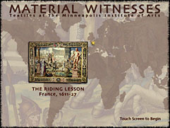
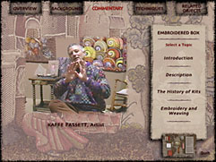
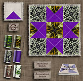

Material Witnesses: Textiles at The Minneapolis Institute of Arts
Location: 17th-19th Century Europe and America, 3rd Floor (310).
A New Interactive Program Lets You Examine the Warp and Weft of Cultural
History
"I've always wanted to have this feeling as if I would be hidden in
the threads, and those threads had a recorded memory, and I could hear
and know all the things that happened. And I guess that's what we try
to do by reading clues off textiles."
Minneapolis Institute of Arts textile
department curator, Lotus Stack, has been studying clues from textiles
all of her life. And she's been practicing these skills at the museum
for twenty years. What she brings to the collection and, ultimately, the
museum audience, is an intense fascination, not only with the objects
themselves, but also with the history and people behind them. As suggested
in the quote above, Stack virtually inhabits these objects, gaining a
kind of insight and knowledge normally reserved for the original makers,
owners, and wearers--be they Peruvian villagers or European kings and
queens.
Recently, Stack brought that insight to the museum's Interactive Media
Group for a collaborative project--an exciting new computer presentation
focusing on textiles, now on permanent view near the museum's third floor
rotunda.
With the unveiling of this program, you might say that things have come
full circle. Consider that the Jacquard loom, an early 19th-century invention
that takes advantage of punch-cards and intricate machinery for the production
of patterned cloth, is the antecedent to the computer. Now, at the close
of the technology-frenzied 20th century, the Institute has produced an
interactive touch-screen program that weaves the stories and teaches the
essentials of textile history and technique.
Material Witnesses: Textiles at The Minneapolis Institute of Arts
is the eighth in the museum's award-winning series of permanent collection-based
multimedia programs designed and installed for gallery visitors. It exploits
the sophistication inherited from its fabric-producing predecessors in
telling tales of textile use, value, and production, and demonstrating
technical fundamentals.
The project concentrates on seven primary objects, chosen for the cultural,
historic, geographic, and technical diversity they represent. It approaches
these objects as though they were evidence--materials conveying
clues that help piece together stories of daily life in a wide array of
times, places, and circumstances. The objects range from a 16th-century
Turkish velvet woven for a sultan's court, to a 20th-century American
creation--a prime example from the innovative Fiber Art movement.
In an effort to involve the user, a simulated
magnifying glass allows examination of the pieces in close detail. In
addition, each object is supported by a five- to ten-minute presentation
that answers questions about who made it, under what conditions and for
what purposes. Seven textile experts, ranging from artist Kaffe Fassett
to conservator Nobuko Kajitani, each provide succinct commentary on one
of the primary objects.
Also, an additional 175 related objects from the Institute's rich and
still-growing collection (witness the recent addition of the Larsen archive)
are presented and discussed. Finally, five technical areas invite the
museum visitor to create onscreen his or her own quilt, weaving, dyed
fabric, and more. The entire program has been designed to allow its users
to participate in the act of discovering textiles--and broader cultural
history--by examining, questioning and doing. 
While Material Witnesses may rely on metaphor to get its points
across, there is a degree to which textiles--and all works of art--are
literal recordings of human experience. And a keen eye coupled with an
eagerness to know human beings--present and past--can yield some profound
and inspired insights. As the curator happily concludes, "...in a way
the threads have recorded these memories for me and do lead me into the
lifestyles and the time of these people, and the excitement and joys that
they had." It is hoped that Material Witnesses will do the same,
bringing possibilities for intense excitement and learning to museum visitors.
Material Witnesses: Textiles at The Minneapolis Institute of Arts
is currently on view in the interactive learning station off the third
floor east hall gallery (310). It was produced with funds generously donated
by the General Mills Foundation.